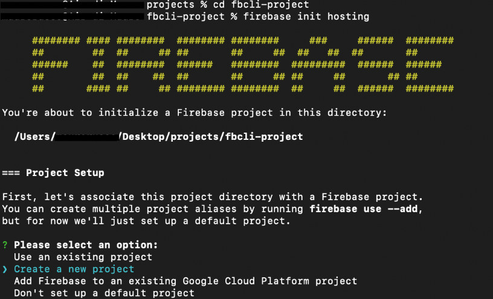
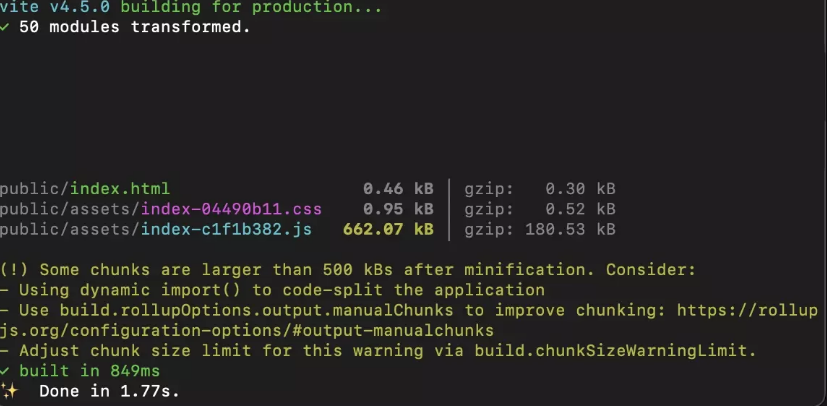
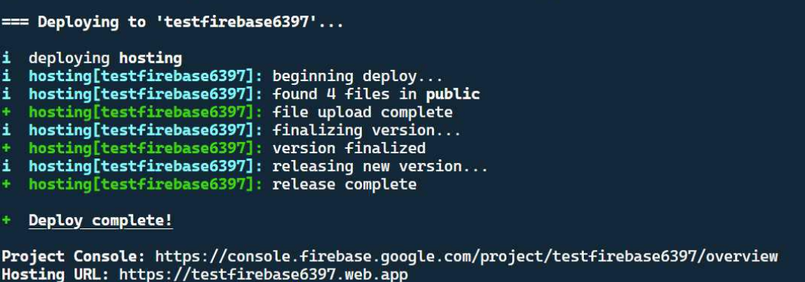

Deploying Your Project to Firebase Hosting
Overview
This section walks you through installing the Firebase CLI, logging in, building your project with Vite, and deploying to Firebase Hosting as a live website.
By the end of this page, your project will be publicly accessible at a web.app URL.
Prerequisites
Make sure you have completed Task 1: Initial Firebase Setup before starting this section. Node.js version 16 or higher must be installed. To check, open your terminal and run node -v.
Public Exposure
Deploying your project makes it publicly accessible on the internet. Confirm that your project does not contain any private credentials in plain JavaScript files, or personal information you do not intend to share.
Installing the Firebase CLI
You will need to use the Firebase CLI tool to deploy your project directly from your terminal.
-
Open the integrated terminal in VS Code:
Press Ctrl+`.
Press Cmd+`.
-
Type the following command and press Enter:
Npm downloads and installs the Firebase CLI globally. This may take up to one minute.
Global Install
The command
-ginstalls the CLI globally so thefirebasecommand is available in any project folder. You only need to run this once per computer. -
Verify the installation by running:
The terminal should print a version number, confirming a successful install.
CLI Installed
The Firebase CLI is installed and ready to use.
Logging In to Firebase
Before you can initialize or deploy, you must authenticate the Firebase CLI with your Google account.
-
Run the following command in the terminal:
A browser window opens asking you to sign in with your Google account.
-
Sign in with the same Google account you used to create your Firebase project.
-
Allow the Firebase CLI to access your account when prompted.
The terminal displays a success message confirming you are logged in.
Login is only required once
You only need to log in once per computer. The CLI remembers your credentials for future sessions. If you need to switch accounts later, run
firebase logoutfollowed byfirebase login.
Logged In
You are now authenticated with the Firebase CLI.
Initializing Firebase Hosting
-
Confirm your terminal is inside your project folder.
-
Run:
The Firebase CLI will start an interactive setup wizard.

Figure 1: The Firebase Hosting setup wizard. -
When prompted to "Please select an option," select [Use an existing project] and press Enter.
-
Select your project from the list and press Enter.
-
When asked "What do you want to use as your public directory?", type
distand press Enter.Public Directory
If you do not type dist, Firebase will deploy your raw source files rather than the compiled build, and your app will not work correctly on the live URL.
-
When asked "Configure as a single-page app (rewrite all URLs to /index.html)?", type
Nand press Enter. -
When asked "Set up automatic builds and deploys with GitHub?", type
Nand press Enter. -
If asked "File dist/index.html already exists. Overwrite?", type
Nand press Enter.After this step, the CLI prints:
Two files are added to your project root:
firebase.jsonand.firebaserc.
Hosting Configured
Firebase Hosting is configured. Your firebase.json should look similar to this:
Building the Project with Vite
Your COMP 1800 project uses Vite. You must run the build step before every deploy. Firebase Hosting serves the files inside dist/, not your raw source files.
-
Run the following command in the terminal:
Vite compiles all your JavaScript modules and writes the output to a new or updated
dist/folder. You will see a list of generated files printed in the terminal.
Figure 2: A successful Vite build listing the files written to dist/.
Build Errors
If the build fails with an error, do not proceed to deploy. Fix the errors shown in the terminal output first. Deploying a broken build will make your live site inaccessible or broken.
-
Confirm that a
dist/folder now exists in your project root and contains anindex.htmlfile.
Build Complete
Your project has been compiled into the dist/ folder and is ready to deploy.
Deploying to Firebase Hosting
-
Run the deploy command:
The Firebase CLI uploads the contents of your dist/ folder to Firebase's servers. You will see upload progress in the terminal.
-
Wait for the deployment to complete.
The terminal displays a confirmation message similar to:
✔ Deploy complete! Project Console: https://console.firebase.google.com/project/your-project-id/overview Hosting URL: https://your-project-id.web.app
Figure 3: The deploy complete confirmation with your live URL. -
Copy the URL shown next to "Hosting URL."
-
Open the URL in a browser tab.
Your COMP 1800 project should load as a live, publicly accessible website. Your URL will follow the pattern
https://your-project-id.web.appusing your own Firebase project ID.
Project Live
Your project is now live on Firebase Hosting.
Conclusion
In this section, you:
- Installed the Firebase CLI globally using npm
- Logged in to Firebase with your Google account
- Configured Firebase Hosting with
"public": "dist"to match Vite's output folder - Built your project with
npm run buildto generate thedist/folder - Deployed the compiled build to a live
web.appURL usingfirebase deploy --only hosting
If your project loads correctly at the Firebase Hosting URL, your deployment is complete. If you see a blank page, a 404 error, or content that does not match your latest changes, refer to the Troubleshooting page.
You have completed the full Firebase setup for your COMP 1800 project.